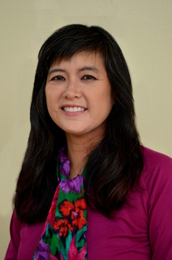

Lisa is dedicated to using the collaborative process to help resolve disputes. As a peacemaker licensed to practice law in Hawaii since 1994, Lisa possesses a unique combination of strong legal advocacy, artful negotiation, outstanding case management, deep listening, superior oral and written communication skills, mediation, facilitation, and collaboration-inspired problem solving methods, to provide top-notch service to her clients. Lisa’s persistence and vision to grow Collaborative Divorce Practice to serve Hawaii’s families resulted in her being awarded two scholarships to attend the International Academy of Collaborative Professionals’ (IACP) Annual Networking and Educational Forums in 2013 and 2016. She also helped organize the IACP Institute on Oahu in March 2017, and coordinated Collaborative Divorce author and American Bar Association Award-Winner Ron Ousky speak in Honolulu about collaborative problem solving in February 2020. Lisa’s passion and commitment to developing Collaborative Divorce Practice was demonstrated when she created, coordinated, and facilitated a two-day Collaborative Divorce Basic Interdisciplinary Training, which was instrumental in training a total of 26 attorneys, mental health and financial professionals to join and participate in the Collaborative Divorce Hawaii Practice Group (CDHPG), for which she is a member. Lisa was also instrumental in developing and implementing a new website for the CDHPG, which is helping to spread awareness about the existence of Collaborative Divorce Practice in Hawaii.
{kind=link}
Lisa has successfully resolved hundreds of disputes as either a Collaborative Attorney or Mediator, with an agreement rate exceeding 90 percent, and she has participated in a total of over 350 hours of Collaborative Divorce and Mediation training. In addition to her Collaborative Divorce Attorney and Mediator practices, Lisa is a Mediator at The Mediation Center of the Pacific, where she focuses on mediating divorce, parenting plans, and post-divorce cases. Lisa serves on the working group to update the Hawaii Guidelines for Mediators. Lisa had educated the public on the legal issues of Hawaii divorce at the monthly Second Saturday divorce workshop, where she partnered with a Certified Divorce Financial Analyst and a Therapist to address the legal, financial, and emotional aspects relating to divorce and separation. Lisa has also mentored law students at the University of Hawaii Richardson School of Law in the areas of Collaborative Law Practice and Mediation.
Lisa partnered with the University of Hawaii to produce an educational multi-part video series called “Take Charge of Your Money 4.” (To view the episode on Collaborative Divorce, where Lisa and Collaborative Financial Neutral Monica Jennings discuss both Collaborative Divorce and the role of the Financial Neutral in Collaborative Divorce Practice, please go to the Home page of this website and scroll down and click on the third video.)
Lisa also trains both budding and experienced Mediators and Collaborative Divorce professionals. She served as Assistant Mediation Trainer Intern to a 40-hour, 5 day Basic Divorce Mediation Training in Los Angeles in September 2015 led by internationally-known Mediator and Trainer Forrest “Woody” Mosten and continues to mentor its graduates in a monthly virtual mediation study group. She also served as a co-trainer for a multi-day Collaborative Divorce Team Training in Wailea on the Island of Maui.
Directly Below: Lisa, appearing in the second row, second person on the left, with the 17 professionals whom Lisa helped to train in acquiring and practicing Divorce Mediation skills. The Divorce Mediation students consisted of attorneys, therapists, and financial planners who traveled to Los Angeles from all over California, Oregon, Florida, Massachusetts, and Arizona. (Photo courtesy of Forrest Mosten.)
{kind=link}
Lisa has also provided mediation and collaborative practice training and education to a broad array of audiences, including students, faculty, professionals, and patrons at the following venues: The Mediation Center of the Pacific, Kapiolani Community College, The Hawaii State Bar Association (including educating members of The Alternative Dispute Resolution Section, The Young Lawyers Division Section, The Elder Law Section, The Litigation Section, and The Hawaii Women Lawyers Group), Hawaii Psychological Association’s Annual Conventions (years 2014 and 2018), Hawaii Paralegals Association, The Association for Conflict Resolution Hawaii Chapter, Kapolei Public Library, Happiness U, Rotary International Clubs, Honolulu Business Network Groups, Business Networking International Groups throughout the Island of Oahu, at the Annual Peace Day Hawaii Festival, and to numerous Psychologists, Financial Planners, RE/MAX, Keller Williams, and other Real Estate Professionals, and Litigation Family Law Attorneys throughout the Hawaiian Islands.
Lisa has received both basic and advanced Collaborative Divorce training by internationally-recognized Collaborative Divorce attorney-practitioner and trainer, Pauline H. Tesler. Lisa has also participated in numerous mediation trainings at the Mediation Center of the Pacific and the Pacific Center for Collaboration.
Lisa offers Collaborative Divorce Lawyering and Collaborative Mediation services via online Zoom meeting technology. She was actively involved with the Virtual Mediation Lab as an Online Mediator and worked collaboratively with mediators from around the globe. Lisa assisted an internationally-known mediator and creator of the Virtual Mediation Lab, Giuseppe Leone, present a forum on using Skype technology in 2013 to conduct online mediation sessions. Lisa regularly worked with Giuseppe to enhance online mediation methods and educate mediators in utilizing these online methods. As part of this process, Lisa helped Giuseppe produce four mediation educational videos, including a divorce online mediation and a mediation using the innovative Transformative Mediation model.
Lisa has also received over 50 hours of training in various facilitation methods, including Compassionate, Non-Violent Communication and Anger Management, which she incorporates into her work with her clients. At the Center for Alternative Dispute Resolution at the Hawaii Supreme Court, Lisa was a keynote speaker on Nonverbal Communication best practices for Mediators in October of 2019.
Immediately Below: The most skillful Collaborative Divorce practitioners commit to honing their craft by regular attendance at Advanced Collaborative Divorce Trainings. Lisa has attended numerous Advanced Collaborative Divorce trainings and workshops, and Lisa has also trained budding Collaborative Professionals, including attorneys, financial neutrals, and mental health professionals. Here, Lisa is with Collaborative Divorce Pioneer Pauline Tesler at one of Pauline’s Advanced Collaborative Divorce Workshops in March 2017.
{kind=link}
Lisa also performed work as a Lay Minister and Lay Chaplain, which serves her Collaborative Divorce Attorney and Mediator roles perfectly. As a Lay Minister and Lay Leader at The First Unitarian Church of Honolulu for 16 years, Lisa was recognized as the go-to person for coordinating and facilitating meetings of all sizes dealing with diverse issues. Lisa has facilitated over 160 meetings, with the number of participants ranging from 3 to 148 people. Lisa’s ability to facilitate and collaborate group meetings and achieve resolution consistently exceeded 90 percent agreement rates. She successfully mentored over 30 teenagers and their families about social, education, and health concerns as they navigated high school and commenced entering adulthood, always maintaining confidentiality, encouraging family collaboration, and respecting choices and decisions.
Lisa volunteered as a Lay Chaplain for patients and families utilizing the services of Hospice Hawaii. The end of a marriage through divorce can be as traumatic as the end of a marriage due to death of a spouse, and Lisa has invaluable experience in handling both of these events with empathy, patience, and compassion.
Lisa previously worked as the civilian Supervisory Attorney Advisor at the Naval Legal Service Office at Pearl Harbor, where serving as Civil Law Department Head leading the Legal Assistance and Claims Adjudication Divisions, she managed a staff of 11 consisting of active-duty Judge Advocate General attorneys, legalmen, and civilian paralegals. Also there, Lisa specialized in Family Law, where she assisted and educated over 1,800 service members and their families navigate the processes of obtaining an uncontested divorce, saving clients thousands of dollars in legal fees. She also gave over 50 seminars on Hawaii Divorce Basics, which educated over 750 active-duty servicemembers and their families about divorce processes.
Additionally, Lisa represented adoption clients in Hawaii Family Court, leading to successful adoptions of 26 minor children. Lisa also gave more than 100 presentations pertaining to Family Law issues at the Family Service Center at Pearl Harbor. Lisa also used her solid Family Estate Planning expertise to assist over 2,100 estate planning clients plan more effectively for future events. In recognition of her tireless efforts to manage the delivery of high-quality legal services to a large population of active duty military servicepersons and their families, Lisa received the Civilian of the Year award for the year 2000.
Lisa also practiced law as an Associate Attorney at Goodsill Anderson Quinn & Stifel, where she handled civil litigation, real property, and immigration law cases. During law school, Lisa served as a Judicial Extern Law Clerk for Chief Judge Thelton E. Henderson of the United States District Court in San Francisco, California. Prior to attending law school, Lisa worked as a Paralegal for the Legal Aid Society of Hawaii, where she represented clients in Hawaii Department of Human Services Fair Hearings and prepared Proposed Findings of Fact and Conclusions of Law. There, she also helped over 120 clients with legal triage support.
Lisa is Past President of Conflict Resolution Alliance (formerly known as the Hawaii Chapter of the Association for Conflict Resolution), where she has been serving on its Board of Directors for the past seven years. The mission of Conflict Resolution Alliance is to sponsor alternative dispute resolution-related trainings and events to enhance the development of Peace-builders not only locally, but also on the U.S. mainland and internationally. In December 2018, The Mediation Center of the Pacific honored Lisa and her fellow Conflict Resolution Alliance Board members with its Peacemaker Award. Lisa has also been a Co-Chair of the Alternative Dispute Resolution Section of the Hawaii State Bar Association since January 2015, where Lisa has helped coordinate dozens of Mediation and Collaborative Practice workshops to help sharpen skills for alternative dispute resolution practitioners.
Immediately Below: Governor David Ige presents to 2016 Conflict Resolution Alliance President Lisa Jacobs a Proclamation naming October 20, 2016 as Hawaii Conflict Resolution Day.

Immediately Below: Here are pictures of Lisa with her fellow Alternative Dispute Resolution colleagues in October 2017, accepting Hawaii Conflict Resolution Day proclamations from Governor David Ige, Chief Justice Mark Recktenwald of the Hawaii Supreme Court, and members of the Honolulu City Council, respectively.
{kind=link}
{kind=link}
{kind=link}
Lisa is a member of the International Academy of Collaborative Professionals (IACP), and has been consulted on numerous occasions by the IACP Board of Directors and the IACP Executive Director for guidance on integrating Collaborative Divorce Practice and training and learning opportunities with local Hawaiian culture and customs.
Directly Below: Lisa with Stuart Webb at the International Academy of Collaborative Professionals Annual Networking and Educational Forum in October 2016. Stuart, who is a Family Law Attorney based out of Minneapolis, MN, is the individual who created the Collaborative Divorce concept in January 1990.
{kind=link}
In Lisa’s personal life, she is blessed with a wonderful adult son from her first marriage, which ended in divorce. Lisa and her former husband have remained amicable for the sake of their son, who is now fully grown. After her divorce, Lisa met her husband David through a mutual friend. Lisa and David have been happily married since 1996, and they have two daughters. Lisa has been a resident of Oahu for over 28 years. Lisa enjoys singing, playing guitar and ukulele, and performs regularly as a solo vocalist with several music groups and bands both on Oahu and in Washington, California, and Oregon. When Lisa is not mediating, collaborative lawyering, singing, or playing her guitar or ukulele, she enjoys staying fit by walking with others as part of the Hawaii Blue Zones Project. For her volunteer efforts with the Hawaii Blue Zones Project to promote wellness within the Aloha State, Lisa and two other Hawaii residents were featured as the front-page cover story in the Summer 2018 edition of “Island Scene” Magazine, which is the quarterly magazine published by the Hawaii Medical Service Association (HMSA) and distributed to all HMSA members statewide, in an article titled, “Meet The Champions: Blue Zones Project Champions Share Their Stories.”
Below is an outline of my Areas of Practice, Education, Hawaii Bar Admission, Memberships and Affiliations, and Professional and Civic Activities.
Practice Areas:
- Collaborative Divorce – in role as Attorney aligned with one spouse
- Collaborative Divorce Mediation – in role as impartial Mediator
- Unbundled Legal Services: Divorce Document Drafting, Legal Coaching, Consulting, and Second Opinions
- Post-Nuptial Agreements – in role as Attorney to one spouse
- Collaborative Marriage and Relationship Planning
- Marital and Relationship Mediation – in role as impartial Mediator
- Planning or Conflict Management within Extended Families
- Facilitation Services
- Conflict Coaching
- Training Services in the Areas of Collaborative Divorce, Divorce Mediation, Nonviolent, Compassionate Communication, and Nonverbal Communication
Education:
Juris Doctorate Degree (J.D.) — Santa Clara University School of Law, Santa Clara, California, May 1994.
- Scholarship Recipient, Law Faculty Scholarship, 1991-1994.
- Comments Editor, Santa Clara Law Review, 1993-1994.
- Authored and published Santa Clara Law Review articled titled, “Substantive Penal Hate Crime Legislation: Toward Defining Constitutional Guidelines Following The R.A.V. v. City of St. Paul and Wisconsin v. Mitchell Decisions,” 34 Santa Clara Law Review 711 (1994).
- Officer, Santa Clara University School of Law Honors Moot Court Board, 1993-1994.
- Received Honorable Mention in American Bar Association Negotiation Competition, Fall 1993.
- Presented seminar on alternative dispute resolution techniques entitled, “The Civil Justice Reform Act: Alternative Dispute Resolution Techniques in the United States District Court for the Northern District of California,” Fall 1993.
- Recipient, American Jurisprudence Award in Estate Planning, Spring 1994.
- Received perfect score on final exam for Lawyers’ Professional Responsibility Course, Spring 1994.
Bachelor of Arts Degree — Santa Clara University, Santa Clara, California. Major: Communication (Print Emphasis), December 1988.
- Managing Editor, The Santa Clara weekly campus newspaper, 1986-1988.
Admitted to Law Practice:
- Supreme Court of Hawaii, November 1994
- United States District Court, District of Hawaii, November 1994
Memberships and Affiliations:
- Hawaii State Bar Association
- Conflict Resolution Alliance
- Alternative Dispute Resolution Section of the Hawaii State Bar Association
- Collaborative Divorce Professionals Study Group, Honolulu, Hawaii
- Collaborative Divorce Hawaii Practice Group
- International Academy of Collaborative Professionals
- Family Law Section of the Hawaii State Bar Association
- Hawaii Women Lawyers, Hawaii State Bar Association
Professional and Civic Activities:
- Mediator, Facilitator, Speaker, and Assistant Trainer, Mediation Center of the Pacific, Honolulu, Hawaii
- Attorney-Mediator speaker on the legal issues of Hawaii divorce at monthly Second Saturday divorce workshops for women
- Chairperson since January 2015, Alternative Dispute Resolution Section of the Hawaii State Bar Association, Honolulu, Hawaii
- Past President and on Board of Directors since January 2014, Conflict Resolution Alliance (formerly known as Association for Conflict Resolution Hawaii Chapter), Honolulu, Hawaii
- Board Member, EPIC `Ohana, Honolulu, Hawaii
- Co-Founder and Facilitator, Coaching and Counseling Collaborative Mastermind Group, Honolulu, Hawaii
- Former Board Member, Hawaii Center for Nonviolent Communication, Hawaii Statewide
- Assistant Mediation Trainer Intern, Mosten Mediation Services, Los Angeles, CA
- Co-Founder, Collaborative Divorce Professionals Study Group, Honolulu, Hawaii
- Assistant Facilitator, Pacific Center for Collaboration
- Workshop Presenter on Collaborative Divorce and Mediation
- Keynote Speaker on the topic of Nonviolent, Compassionate Communication best practices
- Keynote Speaker on the topic of Nonverbal Communication best practices
- Former Volunteer Program Coordinator, Family Promise of Hawaii, Honolulu, Hawaii
- Band Member, HI Standards Band (vocals, guitar, bass, `ukulele)
- Singer, Soloist and Teaching Assistant for “Sing For Your Life” Singing Group, Honolulu, Hawaii
- Guest Vocalist for Cutting Edge Band
- Singer for Threshold Choir, Kailua, Hawaii
- Singer for the Windward Choral Society, Kailua, Hawaii
- Volunteer Ambassador, Hawaii Blue Zones Project, Kailua, Hawaii
- Member, YMCA of Honolulu, Windward Branch, Kailua, Hawaii
- Former Attorney-Mediator, www.Wevorce.com
- Former Online Mediator, Virtual Mediation Lab, Honolulu, Hawaii
- Former Facilitator, Advisory Board Member & Wellness Conference Co-Chair, Sunrise Ministry Foundation, Honolulu, Hawaii
- Former Lay Minister, Teacher, Vice President, Trustee, Group Facilitator & Outreach Coordinator, First Unitarian Church of Honolulu
- Former Lay Chaplain, Hospice Hawaii, Honolulu, Hawaii
- Former Lay Chaplain, Hawaiian Humane Society, Honolulu, Hawaii
- Former Teaching Assistant & Past President, Parent Participation Nursery School, Kailua, Hawaii
- Former Volunteer Facilitator, Kids First Program, Hawaii Family Court, Honolulu, Hawaii